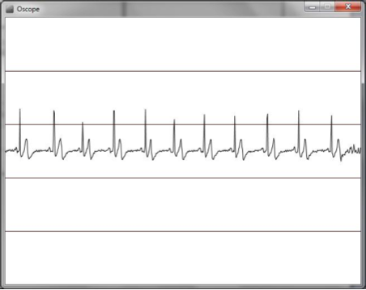
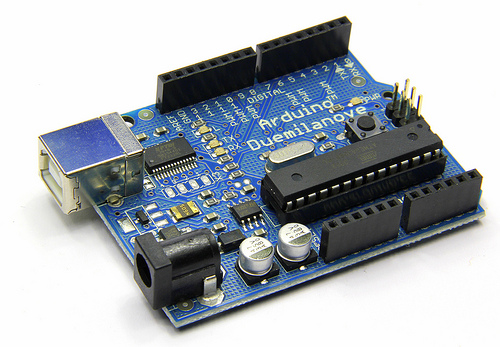

Introduction
Where does this fit into your curriculum?
This introductory breadth course is intended for all BME students to introduce concepts, examples, and practical techniques that are important for measuring biosignals. All students, regardless of BME specialization, should possess the ability to make measurements, whether forces for Biomechanics, temperature and pressure for Tissue Engineering/Biomaterials, or cardiovascular electrical signals for Bioinstrumentation & Biosignals. All specializations should consider taking a 3000-level instrumentation lab, for which this course will provide a basic background.
Students planning to specialize in Bioinstrumentation and Biosignals are strongly recommended to supplement this course with additional ECE core courses, such as ECE2019 (Sensors) and upper-level BME courses in the Bioinstrumentation and Biosignals track where you will be able to acquire a more in-depth understanding of this subject area.
Prerequisites
It is assumed that each student has taken or is familiar with the material in:
Chemistry: CH 1010 (Molecularity)
Physics: PH 1120/21 (Physics: Electricity and Magnetism) including an understanding of Ohm’s Law, electric fields and potentials, and basic circuit theory.
Mathematics: Students should be familiar with exponential and logarithmic functions and complex numbers.
The following courses are not required, but can be helpful:
BB 2550 (Cell Biology)
ECE2010 (Intro to ECE)
Objectives
The primary learning objective of this course is the conceptual and practical knowledge how to measure any biomedical or biological signal and what factors affect measurement accuracy.
For example, if you need to measure strain and pressure in an engineered blood vessel in the lab:
What sensor would you purchase? What specifications would it need?
How does it work?
How would you record the sensor’s output signal, such that you could analyze the data, or a physician could make a diagnosis?
How would you measure blood chemistry, or bioelectrical signals?
To accomplish this learning objective, students will learn the physiology and properties of common biomedical signals, and how sensors that transduce these signals into recordable data.
For practical experience, students will build their own biosensor to measure heart signals using inexpensive equipment (an open-source hardware platform, Arduino).
Specifically, course objectives are to gain a working knowledge of concepts relating to:
Measurement systems, biomedical sensors and electrodes
Electronic components, circuit analysis, amplification, filtering and digitizing
Chemical sensors involved in clinical measurements of various biological relevant molecules
Instruments used to measure temperature, volume, pressure, flow, and movement of the body or biological samples, including cells and tissue-engineered constructs
Instruments used to diagnose neurological and cardiovascular health and disease
Bioelectrical signals measurement and electrical stimulation
Biomedical imaging, such as ultrasound, MRI, and CT
Build a biomedical sensor using inexpensive hardware and use it to measure your own cardiovascular signals!


ABET Course Objectives
The Accreditation Board for Engineering and Technology (ABET) rigorously monitors your biomedical engineering curriculum at WPI, which is important because your future employers will understand you have met high standards for engineering education. Each course is designed to meet specific ABET course outcomes.
In this course, each student will be assessed for their demonstrated ability to:
Identify, formulate, and solve complex engineering problems at the interface of engineering and biology by applying principles of engineering, science, and mathematics (ABET Criterion 1)
Develop and conduct appropriate experimentation, analyze and interpret data from living and non-living systems, and use engineering judgment to draw conclusions (ABET Criterion 6)
Accreditation is proof that an external review board has assessed the quality of your educational program and it meets standards necessary for students to enter their professions upon graduation. Obtaining an ABET-accredited BME degree is important for your future career and employment, and it is important that you understand the accreditation process.
This course, including student assignments, may be audited by ABET!
Tips for Success
This course will prepare you to deal competently with various biomedical signal acquisition challenges that may confront you in the future. The subject should be fun and enjoyable, but it also requires a solid engineering approach to the topic. The emphasis in this course is on fundamental principles and practical applications. Be prepared to review background topics, such as mathematics and physics, as necessary. Remember the goal, to build a device that measures your own body signals--- this is exciting and empowering!
Be prepared to devote considerable time to this class. Some specific recommendations are:
COME TO OFFICE HOURS! (Seriously. We are here to help. Coming to OHs will improve your grade in 3 ways. 1: You will understand more. 2: You will get participation points. 3: We will be happy.)
Take initiative. Your success in this course is directly linked to the amount of effort that you put into this class.
Have fun! Instrumentation is cool, though some topics can be a bit of a slog. Take the long view and realize that learning the foundations is critical to achieving the end goal. In-class demonstrations, real-world examples, and the "lab" project will bring context to course topics.
Don't miss class. Don't arrive late for class. Take notes during class! New material is covered each lecture. If you miss class, you are responsible for covering the missed material on your own, posted on Canvas.
Keep up with lecture material and seek the immediate help from the instructors or TAs as soon as you encounter difficulties with the material. There are many office hours and recitations available.
Ask questions. This includes during class, discussions, and office hours.
Study with your peers, but turn in your own work. Graders will know immediately if your work is identical to another student's, even if you change a few words. If you're looking at someone else's work while writing your own, you're not doing your own work. Course assignments change each year, and it is obvious if you copy material from a prior years.
Manage your time wisely. Start planning your HW early, and don’t postpone assignments until the last minute.
Every measured quantity needs UNITS! Every homework, lab, and exam question will have points docked for missing and/or incorrect units. (Seconds, Volts, Amps, degrees Celsius, Millimeters, Moles per liter, etc.)
Gut-check every answer. Say you solved for blood flow and calculated arterial blood flow velocity as 1 mm/s. Does this sound right? (no!) What if you got 1000 m/s? (no!) If it doesn't sound right, check your units and your orders of magnitude (milli, kilo, etc).